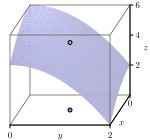
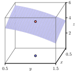
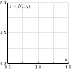
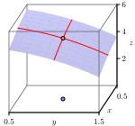
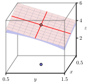
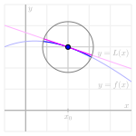
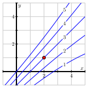
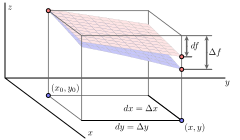
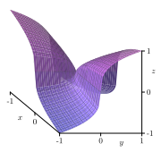

Section10.4Linearization: Tangent Planes and Differentials
Motivating Questions
What does it mean for a function of two variables to be locally linear at a point?
How do we find the equation of the plane tangent to a locally linear function at a point?
What is the differential of a multivariable function of two variables and what are its uses?
One of the central concepts in single variable calculus is that the graph of a differentiable function, when viewed on a very small scale, looks like a line. We call this line the tangent line and measure its slope with the derivative. In this section, we will extend this concept to functions of several variables.
Let’s see what happens when we look at the graph of a two-variable function on a small scale. To begin, let’s consider the function \(f\) defined by
Figure10.4.1.The graph of \(f(x,y)=6-x^2/2 - y^2\text{.}\)
We choose to study the behavior of this function near the point \((x_0,
y_0) = (1,1)\text{.}\) In particular, we wish to view the graph on an increasingly small scale around this point, as shown in the two plots in Figure 10.4.2


Figure10.4.2.The graph of \(f(x,y)=6-x^2/2 - y^2\text{.}\)
Just as the graph of a differentiable single-variable function looks like a line when viewed on a small scale, we see that the graph of this particular two-variable function looks like a plane, as seen in Figure 10.4.3. In the following preview activity, we explore how to find the equation of this plane.
Figure10.4.3.The graph of \(f(x,y)=6-x^2/2 - y^2\text{.}\)
In what follows, we will also use the important fact 1 that the plane passing through \((x_0, y_0, z_0)\) may be expressed in the form \(z = z_0 + a(x-x_0) + b(y-y_0)\text{,}\) where \(a\) and \(b\) are constants.
Preview Activity10.4.1.
Let \(f(x,y) = 6 - \frac{x^2}2 - y^2\text{,}\) and let \((x_0,y_0)
= (1,1)\text{.}\)
Evaluate \(f(x,y) = 6 - \frac{x^2}2 - y^2\) and its partial derivatives at \((x_0,y_0)\text{;}\) that is, find \(f(1,1)\text{,}\)\(f_x(1,1)\text{,}\) and \(f_y(1,1)\text{.}\)
We know one point on the tangent plane; namely, the \(z\)-value of the tangent plane agrees with the \(z\)-value on the graph of \(f(x,y) = 6 - \frac{x^2}2 - y^2\) at the point \((x_0,
y_0)\text{.}\) In other words, both the tangent plane and the graph of the function \(f\) contain the point \((x_0, y_0, z_0)\text{.}\) Use this observation to determine \(z_0\) in the expression \(z = z_0 + a(x-x_0) + b(y-y_0)\text{.}\)
Sketch the traces of \(f(x,y) = 6 - \frac{x^2}2 - y^2\) for \(y=y_0=1\) and \(x=x_0=1\) below in Figure 10.4.4.

Figure10.4.4.The traces of \(f(x,y)\) with \(y=y_0=1\) and \(x=x_0=1\text{.}\)
Determine the equation of the tangent line of the trace that you sketched in the previous part with \(y=1\) (in the \(x\) direction) at the point \(x_0=1\text{.}\)


Figure10.4.5.The traces of \(f(x,y)\) and the tangent plane.
Figure 10.4.5 shows the traces of the function and the traces of the tangent plane. Explain how the tangent line of the trace of \(f\text{,}\) whose equation you found in the last part of this activity, is related to the tangent plane. How does this observation help you determine the constant \(a\) in the equation for the tangent plane \(z = z_0+a(x-x_0) + b(y-y_0)\text{?}\) (Hint: How do you think \(f_x(x_0,y_0)\) should be related to \(z_x(x_0,y_0)\text{?}\))
In a similar way to what you did in (d), determine the equation of the tangent line of the trace with \(x=1\) at the point \(y_0=1\text{.}\) Explain how this tangent line is related to the tangent plane, and use this observation to determine the constant \(b\) in the equation for the tangent plane \(z=z_0+a(x-x_0) + b(y-y_0)\text{.}\) (Hint: How do you think \(f_y(x_0,y_0)\) should be related to \(z_y(x_0,y_0)\text{?}\))
Finally, write the equation \(z=z_0 + a(x-x_0) + b(y-y_0)\) of the tangent plane to the graph of \(f(x,y)=6-x^2/2 - y^2\) at the point \((x_0,y_0)=(1,1)\text{.}\)
Subsection10.4.1The Tangent Plane
Before stating the formula for the equation of the tangent plane at a point for a general function \(f=f(x,y)\text{,}\) we need to discuss a technical condition. As we have noted, when we look at the graph of a single-variable function on a small scale near a point \(x_0\text{,}\) we expect to see a line; in this case, we say that \(f\) is locally linear near \(x_0\) since the graph looks like a linear function locally around \(x_0\text{.}\) Of course, there are functions, such as the absolute value function given by \(f(x)=|x|\text{,}\) that are not locally linear at every point. In single-variable calculus, we learn that if the derivative of a function exists at a point, then the function is guaranteed to be locally linear there.
In a similar way, we say that a two-variable function \(f\) is locally linear near \((x_0,y_0)\) provided that the graph of \(f\) looks like a plane (its tangent plane) when viewed on a small scale near \((x_0,y_0)\text{.}\) How can we tell when a function of two variables is locally linear at a point?
It is not unreasonable to expect that if \(f_x(a,b)\) and \(f_y(a,b)\) exist for some function \(f\) at a point \((a,b)\text{,}\) then \(f\) is locally linear at \((a,b)\text{.}\) This is not sufficient, however. As an example, consider the function \(f\) defined by \(f(x,y) = x^{1/3} y^{1/3}\text{.}\) In Exercise 10.4.5.11 you are asked to show that \(f_x(0,0)\) and \(f_y(0,0)\) both exist, but that \(f\) is not locally linear at \((0,0)\) (see Figure 10.4.12). So the existence of the two first order partial derivatives at a point does not guarantee local linearity at that point.
It would take us too far afield to provide a rigorous dicussion of differentiability of functions of more than one variable (see Exercise 10.4.5.15 for a little more detail), so we will be content to define stronger, but more easily verified, conditions that ensure local linearity.
Differentiablity.
If \(f\) is a function of the independent variables \(x\) and \(y\) and both \(f_x\) and \(f_y\) exist and are continuous in an open disk containing the point \((x_0,y_0)\text{,}\) then \(f\) is continuously differentiable at \((x_0,y_0)\text{.}\)
As a consequence, whenever a function \(z = f(x,y)\) is continuously differentiable at a point \((x_0,y_0)\text{,}\) it follows that the function has a tangent plane at \((x_0,y_0)\text{.}\) Viewed up close, the tangent plane and the function are then virtually indistinguishable. (We won’t formally define differentiability of multivariable functions here, and for our purposes continuous differentiability is the only condition we will ever need to use. It is important to note that continuous differentiability is a stronger condition than differentiability. All of the results we encounter will apply to differentiable functions, and so also apply to continuously differentiable functions.) In addition, as in Preview Activity 10.4.1, we find the following general formula for the tangent plane.
The tangent plane.
If \(f(x,y)\) has continuous first-order partial derivatives, then the equation of the plane tangent to the graph of \(f\) at the point \((x_0,y_0,f(x_0,y_0))\) is
\begin{equation}
z = f(x_0,y_0) + f_x(x_0,y_0)(x-x_0) + f_y(x_0,y_0)(y-y_0).\tag{10.4.1}
\end{equation}
Important Note: As can be seen in Exercise 10.4.5.11, it is possible that \(f_x(x_0,y_0)\) and \(f_y(x_0,y_0)\) can exist for a function \(f\text{,}\) and so the plane \(z = f(x_0,y_0) + f_x(x_0,y_0)(x-x_0) + f_y(x_0,y_0)(y-y_0)\) exists even though \(f\) is not locally linear at \((x_0,y_0)\) (because the graph of \(f\) does not look linear when we zoom in around the point \((x_0,y_0)\)). In such a case this plane is not tangent to the graph. Differentiability for a function of two variables implies the existence of a tangent plane, but the existence of the two first order partial derivatives of a function at a point does not imply differentiaility. This is quite different than what happens in single variable calculus.
Finally, one important note about the form of the equation for the tangent plane, \(z = f(x_0,y_0) + f_x(x_0,y_0)(x-x_0) + f_y(x_0,y_0)(y-y_0)\text{.}\) Say, for example, that we have the particular tangent plane \(z = 7 - 2(x-3) + 4(y+1)\text{.}\) Observe that we can immediately read from this form that \(f_x(3,-1) = -2\) and \(f_y(3,-1) = 4\text{;}\) furthermore, \(f_x(3,-1)=-2\) is the slope of the trace to both \(f\) and the tangent plane in the \(x\)-direction at \((3,-1)\text{.}\) In the same way, \(f_y(3,-1) = 4\) is the slope of the trace of both \(f\) and the tangent plane in the \(y\)-direction at \((3,-1)\text{.}\)
Activity10.4.2.
Find the equation of the tangent plane to \(f(x,y) = 2 + 4x - 3y\) at the point \((1,2)\text{.}\) Simplify as much as possible. Does the result surprise you? Explain.
Find the equation of the tangent plane to \(f(x,y) = x^2y\) at the point \((1,2)\text{.}\)
Subsection10.4.2Linearization
In single variable calculus, an important use of the tangent line is to approximate the value of a differentiable function. Near the point \(x_0\text{,}\) the tangent line to the graph of \(f\) at \(x_0\) is close to the graph of \(f\) near \(x_0\text{,}\) as shown in Figure 10.4.6.


Figure10.4.6.The linearization of the single-variable function \(f(x)\text{.}\)
In this single-variable setting, we let \(L\) denote the function whose graph is the tangent line, and thus
Furthermore, observe that \(f(x) \approx L(x)\) near \(x_0\text{.}\) We call \(L\) the linearization of \(f\text{.}\)
In the same way, the tangent plane to the graph of a differentiable function \(z = f(x,y)\) at a point \((x_0,y_0)\) provides a good approximation of \(f(x,y)\) near \((x_0,
y_0)\text{.}\) Here, we define the linearization, \(L\text{,}\) to be the two-variable function whose graph is the tangent plane, and thus
at the point \((1,2)\text{.}\) Then use the linearization to estimate the value of \(g(0.8, 2.3)\text{.}\)
Table 10.4.8 provides a collection of values of the wind chill \(w(v,T)\text{,}\) in degrees Fahrenheit, as a function of wind speed, in miles per hour, and temperature, also in degrees Fahrenheit.
Table10.4.8.Wind chill as a function of wind speed and temperature.
\(v \backslash T\)
\(-30\)
\(-25\)
\(-20\)
\(-15\)
\(-10\)
\(-5\)
\(0\)
\(5\)
\(10\)
\(15\)
\(20\)
\(5\)
\(-46\)
\(-40\)
\(-34\)
\(-28\)
\(-22\)
\(-16\)
\(-11\)
\(-5\)
\(1\)
\(7\)
\(13\)
\(10\)
\(-53\)
\(-47\)
\(-41\)
\(-35\)
\(-28\)
\(-22\)
\(-16\)
\(-10\)
\(-4\)
\(3\)
\(9\)
\(15\)
\(-58\)
\(-51\)
\(-45\)
\(-39\)
\(-32\)
\(-26\)
\(-19\)
\(-13\)
\(-7\)
\(0\)
\(6\)
\(20\)
\(-61\)
\(-55\)
\(-48\)
\(-42\)
\(-35\)
\(-29\)
\(-22\)
\(-15\)
\(-9\)
\(-2\)
\(4\)
\(25\)
\(-64\)
\(-58\)
\(-51\)
\(-44\)
\(-37\)
\(-31\)
\(-24\)
\(-17\)
\(-11\)
\(-4\)
\(3\)
\(30\)
\(-67\)
\(-60\)
\(-53\)
\(-46\)
\(-39\)
\(-33\)
\(-26\)
\(-19\)
\(-12\)
\(-5\)
\(1\)
\(35\)
\(-69\)
\(-62\)
\(-55\)
\(-48\)
\(-41\)
\(-34\)
\(-27\)
\(-21\)
\(-14\)
\(-7\)
\(0\)
\(40\)
\(-71\)
\(-64\)
\(-57\)
\(-50\)
\(-43\)
\(-36\)
\(-29\)
\(-22\)
\(-15\)
\(-8\)
\(-1\)
Use the data to first estimate the appropriate partial derivatives, and then find the linearization \(L(v,T)\) at the point \((20,-10)\text{.}\) Finally, use the linearization to estimate \(w(10,-10)\text{,}\)\(w(20,-12)\text{,}\) and \(w(18,-12)\text{.}\) Compare your results to what you obtained in Activity 10.2.5
Figure 10.4.9 gives a contour plot of a continuously differentiable function \(f\text{.}\)

Figure10.4.9.A contour plot of \(f(x,y)\text{.}\) After estimating appropriate partial derivatives, determine the linearization \(L(x,y)\) at the point \((2,1)\text{,}\) and use it to estimate \(f(2.2, 1)\text{,}\)\(f(2, 0.8)\text{,}\) and \(f(2.2, 0.8)\text{.}\)
Subsection10.4.3Differentials
As we have seen, the linearization \(L(x,y)\) enables us to estimate the value of \(f(x,y)\) for points \((x,y)\) near the base point \((x_0, y_0)\text{.}\) Sometimes, however, we are more interested in the change in \(f\) as we move from the base point \((x_0,y_0)\) to another point \((x,y)\text{.}\)

Figure10.4.10.The differential \(df\) approximates the change in \(f(x,y)\text{.}\)
Figure 10.4.10 illustrates this situation. Suppose we are at the point \((x_0,y_0)\text{,}\) and we know the value \(f(x_0,y_0)\) of \(f\) at \((x_0,y_0)\text{.}\) If we consider the displacement \(\langle \Delta x, \Delta
y\rangle\) to a new point \((x,y) = (x_0+\Delta x, y_0
+ \Delta y)\text{,}\) we would like to know how much the function has changed. We denote this change by \(\Delta f\text{,}\) where
\begin{equation*}
\Delta f = f(x,y) - f(x_0, y_0).
\end{equation*}
A simple way to estimate the change \(\Delta f\) is to approximate it by \(df\text{,}\) which represents the change in the linearization \(L(x,y)\) as we move from \((x_0,y_0)\) to \((x,y)\text{.}\) This gives
\begin{align*}
\Delta f \approx df \amp = L(x,y)-f(x_0, y_0)\\
\amp = [f(x_0,y_0)+ f_x(x_0,y_0)(x-x_0) +
f_y(x_0,y_0)(y-y_0)] - f(x_0, y_0)\\
\amp = f_x(x_0,y_0)\Delta x + f_y(x_0, y_0)\Delta y.
\end{align*}
For consistency, we will denote the change in the independent variables as \(dx = \Delta x\) and \(dy =
\Delta y\text{,}\) and thus
\begin{equation}
\Delta f \approx df = f_x(x_0,y_0)~dx + f_y(x_0,y_0)~dy.\tag{10.4.2}
\end{equation}
Expressed equivalently in Leibniz notation, we have
We call the quantities \(dx\text{,}\)\(dy\text{,}\) and \(df\)differentials, and we think of them as measuring small changes in the quantities \(x\text{,}\)\(y\text{,}\) and \(f\text{.}\) Equations (10.4.2) and (10.4.3) express the relationship between these changes. Equation (10.4.3) resembles an important idea from single-variable calculus: when \(y\) depends on \(x\text{,}\) it follows in the notation of differentials that
\begin{equation*}
dy = y'~dx = \frac{dy}{dx}~dx.
\end{equation*}
We will illustrate the use of differentials with an example.
Example10.4.11.
Suppose we have a machine that manufactures rectangles of width \(x=20\) cm and height \(y=10\) cm. However, the machine isn’t perfect, and therefore the width could be off by \(dx = \Delta x = 0.2\) cm and the height could be off by \(dy = \Delta y = 0.4\) cm.
The area of the rectangle is
\begin{equation*}
A(x,y) = xy,
\end{equation*}
so that the area of a perfectly manufactured rectangle is \(A(20, 10) =
200\) square centimeters. Since the machine isn’t perfect, we would like to know how much the area of a given manufactured rectangle could differ from the perfect rectangle. We will estimate the uncertainty in the area using (10.4.2), and find that
\begin{equation*}
\Delta A \approx dA = A_x(20, 10)~dx + A_y(20,10)~dy.
\end{equation*}
Since \(A_x = y\) and \(A_y = x\text{,}\) we have
\begin{equation*}
\Delta A \approx dA = 10~dx + 20~dy = 10\cdot0.2 + 20\cdot0.4 = 10.
\end{equation*}
That is, we estimate that the area in our rectangles could be off by as much as 10 square centimeters.
Activity10.4.4.
The questions in this activity explore the differential in several different contexts.
Suppose that the elevation of a landscape is given by the function \(h\text{,}\) where we additionally know that \(h(3,1) = 4.35\text{,}\)\(h_x(3,1) = 0.27\text{,}\) and \(h_y(3,1) = -0.19\text{.}\) Assume that \(x\) and \(y\) are measured in miles in the easterly and northerly directions, respectively, from some base point \((0,0)\text{.}\) Your GPS device says that you are currently at the point \((3,1)\text{.}\) However, you know that the coordinates are only accurate to within \(0.2\) units; that is, \(dx = \Delta x = 0.2\) and \(dy= \Delta y =
0.2\text{.}\) Estimate the uncertainty in your elevation using differentials.
The pressure, volume, and temperature of an ideal gas are related by the equation
where \(P\) is measured in kilopascals, \(V\) in liters, and \(T\) in kelvin. Find the pressure when the volume is 12 liters and the temperature is 310 K. Use differentials to estimate the change in the pressure when the volume increases to 12.3 liters and the temperature decreases to 305 K.
Refer to Table 10.4.8, the table of values of the wind chill \(w(v,T)\text{,}\) in degrees Fahrenheit, as a function of temperature, also in degrees Fahrenheit, and wind speed, in miles per hour. Suppose your anemometer says the wind is blowing at \(25\) miles per hour and your thermometer shows a reading of \(-15^\circ\) degrees. However, you know your thermometer is only accurate to within \(2^\circ\) degrees and your anemometer is only accurate to within \(3\) miles per hour. What is the wind chill based on your measurements? Estimate the uncertainty in your measurement of the wind chill.
Subsection10.4.4Summary
A function \(f\) of two independent variables is locally linear at a point \((x_0,y_0)\) if the graph of \(f\) looks like a plane as we zoom in on the graph around the point \((x_0,y_0)\text{.}\) In this case, the equation of the tangent plane is given by
\begin{equation*}
z = f(x_0,y_0) + f_x(x_0,y_0)(x-x_0) + f_y(x_0,y_0)(y-y_0).
\end{equation*}
The tangent plane \(L(x,y) = f(x_0,y_0) + f_x(x_0,y_0)(x-x_0) + f_y(x_0,y_0)(y-y_0)\text{,}\) when considered as a function, is called the linearization of a differentiable function \(f\) at \((x_0,y_0)\) and may be used to estimate values of \(f(x,y)\text{;}\) that is, \(f(x,y) \approx L(x,y)\) for points \((x,y)\) near \((x_0,y_0)\text{.}\)
A function \(f\) of two independent variables is differentiable at \((x_0,y_0)\) provided that both \(f_x\) and \(f_y\) exist and are continuous in an open disk containing the point \((x_0,y_0)\text{.}\)
The differential \(df\) of a function \(f= f(x,y)\) is related to the differentials \(dx\) and \(dy\) by
We can use this relationship to approximate small changes in \(f\) that result from small changes in \(x\) and \(y\text{.}\)
Exercises10.4.5Exercises
1.
Find the linearization \(L \left( x, y \right)\) of the function \(f\left( x,
y \right) = \sqrt{ 52 - 16 x^{2} - 9 y^{2} }\) at \(\left( 0, -2 \right)\text{.}\)
\(L \left( x, y \right) =\)
Note: Your answer should be an expression in x and y; e.g. “3x - 5y + 9”
2.
Find the equation of the tangent plane to the surface \(z = e^{4 x/17} \ln \left(
2 y \right)\) at the point \((-2,2, 0.8659)\text{.}\)
z =
Note: Your answer should be an expression of x and y; e.g. “5x + 2y - 3”
3.
A student was asked to find the equation of the tangent plane to the surface \(z = x^{2}-y^{3}\) at the point \((x,y) = (5,4)\text{.}\) The student’s answer was \(z = -39 + 2x (x - 5) - \left(3y^{2}\right) (y - 4).\)
(a) At a glance, how do you know this is wrong. What mistakes did the student make? Select all that apply.
The partial derivatives were not evaluated a the point.
The answer is not a linear function.
The -39 should not be in the answer.
The (x - 5) and (y - 4) should be x and y.
All of the above
(b) Find the correct equation for the tangent plane.
\(z =\)
4.
(a) Check the local linearity of \(f(x,y) = e^{x}\sin\!\left(y\right)\) near \(x=-1,\ y=2.5\) by filling in the following table of values of \(f\) for \(x=-1.1,\ -1,\ -0.9\) and \(y=2.4,\ 2.5,\ 2.6\text{.}\) Express values of \(f\) with 4 digits after the decimal point.
\(x =\)
-1.1
-1
-0.9
\(y = 2.4\)
\(y = 2.5\)
\(y = 2.6\)
(b) Next, fill in the table for the values \(x=-1.01,\ -1,\ -0.99\) and \(y = 2.49,\ 2.5,\ 2.51,\) again showing 4 digits after the decimal point.
\(x =\)
-1.01
-1
-0.99
\(y = 2.49\)
\(y = 2.5\)
\(y = 2.51\)
Notice if the two tables look nearly linear, and whether the second looks more linear than the first (in particular, think about how you would decide if they were linear, or if the one were more closely linear than the other).
(c) Give the local linearization of \(f(x,y) = e^{x}\sin\!\left(y\right)\) at \((-1,2.5)\text{:}\)
Using the second of your tables:
\(f(x,y) \approx\)
Using the fact that \(f_x(x,y) = e^{x}\sin\!\left(y\right)\) and \(f_y(x,y) = e^{x}\cos\!\left(y\right)\text{:}\)
Both tables are nearly linear. To check this, observe that the increments in each row (column) are equal, or nearly so. The second table is more linear due to finer data. (c) From either table we see that \(f(-1,2.5)\approx 0.2202\text{.}\) Also, using the second table,
So a \(-0.1\) change in \(x\) and a \(-0.3\) change in \(y\) produces a \(1.1\) change in \(z\text{.}\)(b) As we know that \(z=8\) when \(x=2\) and \(y=8\text{,}\) the value of \(z\) when \(x=1.7\) and \(y=8\) will be
\begin{equation*}
z = 8 + \Delta z = 8 - 2\Delta x - 3\Delta y.
\end{equation*}
where \(\Delta z\) is the change in \(z\) when \(x\) changes from 2 to 1.7 and \(y\) changes from 8 to 8. We have \(\Delta x = 1.7 - 2 = -0.3\) and \(\Delta y = 8 - 8 = 5.55111512312578e-17\text{.}\) Therefore, when \(x=1.7\) and \(y=8\text{,}\) we have
Find the differential of the function \(w = x^{4} \sin(y^{7} z^{7})\)
\(dw =\)\(dx +\)\(dy +\)\(dz\)
7.
The dimensions of a closed rectangular box are measured as 80 centimeters, 80 centimeters, and 70 centimeters, respectively, with the error in each measurement at most .2 centimeters. Use differentials to estimate the maximum error in calculating the surface area of the box.
square centimeters
8.
One mole of ammonia gas is contained in a vessel which is capable of changing its volume (a compartment sealed by a piston, for example). The total energy \(U\) (in Joules) of the ammonia is a function of the volume \(V\) (in cubic meters) of the container, and the temperature \(T\) (in degrees Kelvin) of the gas. The differential \(dU\) is given by \(dU = 840 dV + 27.32 dT\text{.}\)
(a) How does the energy change if the volume is held constant and the temperature is increased slightly?
it decreases slightly
it increases slightly
it does not change
(b) How does the energy change if the temperature is held constant and the volume is decreased slightly?
it decreases slightly
it increases slightly
it does not change
(c) Find the approximate change in energy if the gas is compressed by 350 cubic centimeters and heated by 3 degrees Kelvin.
Change in energy = . Please include units 2 in your answer.
9.
An unevenly heated metal plate has temperature \(T(x,y)\) in degrees Celsius at a point \((x,y)\text{.}\) If \(T(2,1) = 110\text{,}\)\(T_x \, (2,1) = 12\text{,}\) and \(T_y \, (2,1) = -14\text{,}\) estimate the temperature at the point \((2.04,0.95)\text{.}\)
\(T(2.04,0.95) \approx\) . Please include units 3 in your answer.
10.
Let \(f\) be the function defined by \(f(x,y) = 2x^2+3y^3\text{.}\)
Find the equation of the tangent plane to \(f\) at the point \((1,2)\text{.}\)
Use the linearization to approximate the values of \(f\) at the points \((1.1, 2.05)\) and \((1.3,2.2)\text{.}\)
Compare the approximations form part (b) to the exact values of \(f(1.1, 2.05)\) and \(f(1.3, 2.2)\text{.}\) Which approximation is more accurate. Explain why this should be expected.
11.
Let \(f\) be the function defined by \(f(x,y) = x^{1/3}y^{1/3}\text{,}\) whose graph is shown in Figure 10.4.12.

Figure10.4.12.The surface for \(f(x,y) = x^{1/3}y^{1/3}\text{.}\)
What does this limit tell us about \(f_x(0,0)\text{?}\)
Note that \(f(x,y)=f(y,x)\text{,}\) and this symmetry implies that \(f_x(0,0) = f_y(0,0)\text{.}\) So both partial derivatives of \(f\) exist at \((0,0)\text{.}\) A picture of the surface defined by \(f\) near \((0,0)\) is shown in Figure 10.4.12. Based on this picture, do you think \(f\) is locally linear at \((0,0)\text{?}\) Why?
Show that the curve where \(x=y\) on the surface defined by \(f\) is not differentiable at 0. What does this tell us about the local linearity of \(f\) at \((0,0)\text{?}\)
Is the function \(f\) defined by \(f(x,y) = \frac{x^2}{y^2+1}\) locally linear at \((0,0)\text{?}\) Why or why not?
12.
Let \(g\) be a function that is differentiable at \((-2,5)\) and suppose that its tangent plane at this point is given by \(z = -7 + 4(x+2) - 3(y-5)\text{.}\)
Determine the values of \(g(-2,5)\text{,}\)\(g_x(-2,5)\text{,}\) and \(g_y(-2,5)\text{.}\) Write one sentence to explain your thinking.
Estimate the value of \(g(-1.8, 4.7)\text{.}\) Clearly show your work and thinking.
Given changes of \(dx = -0.34\) and \(dy = 0.21\text{,}\) estimate the corresponding change in \(g\) that is given by its differential, \(dg\text{.}\)
Suppose that another function \(h\) is also differentiable at \((-2,5)\text{,}\) but that its tangent plane at \((-2,5)\) is given by \(3x + 2y - 4z = 9.\) Determine the values of \(h(-2,5)\text{,}\)\(h_x(-2,5)\text{,}\) and \(h_y(-2,5)\text{,}\) and then estimate the value of \(h(-1.8, 4.7)\text{.}\) Clearly show your work and thinking.
13.
In the following questions, we determine and apply the linearization for several different functions.
Find the linearization \(L(x,y)\) for the function \(f\) defined by \(f(x,y) = \cos(x)(2e^{2y}+e^{-2y})\) at the point \((x_0,y_0) = (0,0)\text{.}\) Use the linearization to estimate the value of \(f(0.1, 0.2)\text{.}\) Compare your estimate to the actual value of \(f(0.1, 0.2)\text{.}\)
The Heat Index, \(I\text{,}\) (measured in apparent degrees F) is a function of the actual temperature \(T\) outside (in degrees F) and the relative humidity \(H\) (measured as a percentage). A portion of the table which gives values for this function, \(I=I(T,H)\text{,}\) is provided in Table 10.4.13.
Table10.4.13.Heat index.
T\(\downarrow \backslash\)H\(\rightarrow\)
\(70\)
\(75\)
\(80\)
\(85\)
\(90\)
\(106\)
\(109\)
\(112\)
\(115\)
\(92\)
\(112\)
\(115\)
\(119\)
\(123\)
\(94\)
\(118\)
\(122\)
\(127\)
\(132\)
\(96\)
\(125\)
\(130\)
\(135\)
\(141\)
Suppose you are given that \(I_T(94,75) = 3.75\) and \(I_H(94,75) = 0.9\text{.}\) Use this given information and one other value from the table to estimate the value of \(I(93.1,77)\) using the linearization at \((94,75)\text{.}\) Using proper terminology and notation, explain your work and thinking.
Just as we can find a local linearization for a differentiable function of two variables, we can do so for functions of three or more variables. By extending the concept of the local linearization from two to three variables, find the linearization of the function \(h(x,y,z) =
e^{2x}(y+z^2)\) at the point \((x_0,y_0,z_0) = (0, 1, -2)\text{.}\) Then, use the linearization to estimate the value of \(h(-0.1, 0.9, -1.8)\text{.}\)
14.
In the following questions, we investigate two different applied settings using the differential.
Let \(f\) represent the vertical displacement in centimeters from the rest position of a string (like a guitar string) as a function of the distance \(x\) in centimeters from the fixed left end of the string and \(y\) the time in seconds after the string has been plucked. (An interesting video of this can be seen at https://www.youtube.com/watch?v=TKF6nFzpHBUA 4 .) A simple model for \(f\) could be
Use the differential to approximate how much more this vibrating string is vertically displaced from its position at \((a,b) = \left(\frac{\pi}{4}, \frac{\pi}{3} \right)\) if we decrease \(a\) by \(0.01\) cm and increase the time by \(0.1\) seconds. Compare to the value of \(f\) at the point \(\left(\frac{\pi}{4}-0.01, \frac{\pi}{3}+0.1\right)\text{.}\)
Resistors used in electrical circuits have colored bands painted on them to indicate the amount of resistance and the possible error in the resistance. When three resistors, whose resistances are \(R_1\text{,}\)\(R_2\text{,}\) and \(R_3\text{,}\) are connected in parallel, the total resistance \(R\) is given by
Suppose that the resistances are \(R_1=25\Omega\text{,}\)\(R_2=40\Omega\text{,}\) and \(R_3=50\Omega\text{.}\) Find the total resistance \(R\text{.}\) If you know each of \(R_1\text{,}\)\(R_2\text{,}\) and \(R_3\) with a possible error of \(0.5\)%, estimate the maximum error in your calculation of \(R\text{.}\)
15.
In this section we argued that if \(f = f(x,y)\) is a function of two variables and if \(f_x\) and \(f_y\) both exist and are continuous in an open disk containing the point \((x_0,y_0)\text{,}\) then \(f\) is differentiable at \((x_0,y_0)\text{.}\) This condition ensures that \(f\) is differentiable at \((x_0,y_0)\text{,}\) but it does not define what it means for \(f\) to be differentiable at \((x_0,y_0)\text{.}\) In this exercise we explore the definition of differentiability of a function of two variables in more detail. Throughout, let \(g\) be the function defined by \(g(x,y)= \sqrt{|xy|}\text{.}\)
Use appropriate technology to plot the graph of \(g\) on the domain \([-1,1] \times [-1,1]\text{.}\) Explain why \(g\) is not locally linear at \((0,0)\text{.}\)
Show that both \(g_x(0,0)\) and \(g_y(0,0)\) exist. If \(g\) is locally linear at \((0,0)\text{,}\) what must be the equation of the tangent plane \(L\) to \(g\) at \((0,0)\text{?}\)
Recall that if a function \(f = f(x)\) of a single variable is differentiable at \(x=x_0\text{,}\) then
exists. We saw in single variable calculus that the existence of \(f'(x_0)\) means that the graph of \(f\) is locally linear at \(x=x_0\text{.}\) In other words, the graph of \(f\) looks like its linearization \(L(x) = f(x_0)+f'(x_0)(x-x_0)\) for \(x\) close to \(x_0\text{.}\) That is, the values of \(f(x)\) can be closely approximated by \(L(x)\) as long as \(x\) is close to \(x_0\text{.}\) We can measure how good the approximation of \(L(x)\) is to \(f(x)\) with the error function
As \(x\) approaches \(x_0\text{,}\)\(E(x)\) approaches \(f(x_0)+f'(x_0)(0) - f(x_0) = 0\text{,}\) and so \(L(x)\) provides increasingly better approximations to \(f(x)\) as \(x\) gets closer to \(x_0\text{.}\) Show that, even though \(g(x,y) = \sqrt{|xy|}\) is not locally linear at \((0,0)\text{,}\) its error term
at \((0,0)\) has a limit of \(0\) as \((x,y)\) approaches \((0,0)\text{.}\) (Use the linearization you found in part (b).) This shows that just because an error term goes to \(0\) as \((x,y)\) approaches \((x_0,y_0)\text{,}\) we cannot conclude that a function is locally linear at \((x_0,y_0)\text{.}\)
As the previous part illustrates, having the error term go to \(0\) does not ensure that a function of two variables is locally linear. Instead, we need a notation of a relative error. To see how this works, let us return to the single variable case for a moment and consider \(f = f(x)\) as a function of one variable. If we let \(x = x_0+h\text{,}\) where \(|h|\) is the distance from \(x\) to \(x_0\text{,}\) then the relative error in approximating \(f(x_0+h)\) with \(L(x_0+h)\) is
Show that, for a function \(f = f(x)\) of a single variable, the limit of the relative error is \(0\) as \(h\) approaches \(0\text{.}\)
Even though the error term for a function of two variables might have a limit of \(0\) at a point, our example shows that the function may not be locally linear at that point. So we use the concept of relative error to define differentiability of a function of two variables. When we consider differentiability of a function \(f = f(x,y)\) at a point \((x_0,y_0)\text{,}\) then if \(x = x_0+h\) and \(y = y_0+k\text{,}\) the distance from \((x,y)\) to \((x_0,y_0)\) is \(\sqrt{h^2+k^2}\text{.}\)
Definition10.4.14.
A function \(f = f(x,y)\) is differentiable at a point \((x_0,y_0)\) if there is a linear function \(L = L(x,y) = f(x_0,y_0) + m(x-x_0) + n(y-y_0)\) such that the relative error
has at limit of \(0\) at \((h,k) = (0,0)\text{,}\) where \(E(x,y) = f(x,y) - L(x,y)\text{,}\)\(h=x-x_0\text{,}\) and \(k = y-y_0\text{.}\)
A function \(f\) is differentiable if it is differentiable at every point in its domain. The function \(L\) in the definition is the linearization of \(f\) at \((x_0,y_0)\text{.}\) Verify that \(g(x,y) = \sqrt{|xy|}\) is not differentiable at \((0,0)\) by showing that the relative error at \((0,0)\) does not have a limit at \((0,0)\text{.}\) Conclude that the existence of partial derivatives at a point is not enough to ensure differentiability at that point. (Hint: Consider the limit along different paths.)
16.
Suppose that a function \(f = f(x,y)\) is differentiable at a point \((x_0,y_0)\text{.}\) Let \(L = L(x,y) = f(x_0,y_0) + m(x-x_0) + n(y-y_0)\) as in the conditions of Definition 10.4.14. Show that \(m = f_x(x_0,y_0)\) and \(n = f_y(x_0,y_0)\text{.}\) (Hint: Calculate the limits of the relative errors when \(h = 0\) and \(k = 0\text{.}\))
17.
We know that if a function of a single variable is differentiable at a point, then that function is also continuous at that point. In this exercise we determine that the same property holds for functions of two variables. A function \(f\) of the two variables \(x\) and \(y\) is continuous at a point \((x_0,y_0)\) in its domain if
Show that if \(f\) is differentiable at \((x_0,y_0)\text{,}\) then \(f\) is continuous at \((x_0,y_0)\text{.}\) (Hint: Multiply both sides of the equality that comes from differentiability by \(\lim_{(h,k) \to (0,0)} \sqrt{h^2+k^2}\text{.}\))
As we saw in Section 9.5, the equation of a plane passing through the point \((x_0, y_0, z_0)\) may be written in the form \(A(x-x_0) + B(y-y_0) + C(z-z_0) = 0\text{.}\) If the plane is not vertical, then \(C\neq 0\text{,}\) and we can rearrange this and hence write \(C(z-z_0) = -A(x-x_0) - B(y-y_0)\) and thus